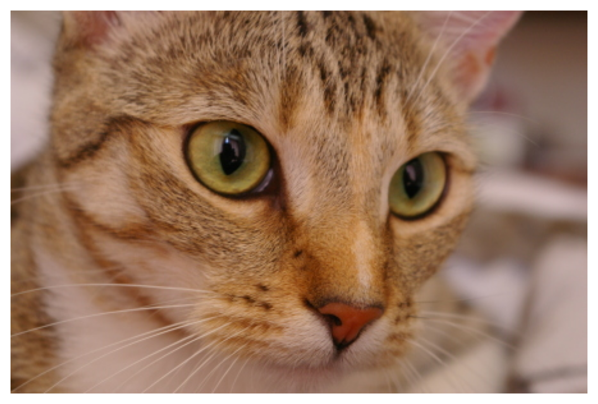
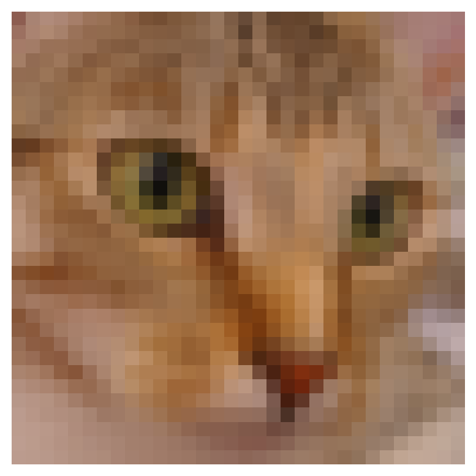

✅ 체크포인트 — [[2., 3.], [4., 2.]]이면 맞습니다. 이론의 보드에서 네 창의 최댓값과 같습니다.
채널이 여섯 장인 14×14 특성 맵을 통과시키고, 풀링 층의 파라미터를 꺼내 봅니다.
# ✍️ 직접 입력x = torch.zeros(1, 6, 14, 14)print(pool(x).shape)print(list(pool.parameters()))
torch.Size([1, 6, 7, 7])
[]
✅ 체크포인트 — torch.Size([1, 6, 7, 7])과 빈 목록 []이면 맞습니다.
💬 결과 해설 — 풀링은 채널마다 따로 적용되어 크기만 절반이 되고 채널 6은 그대로입니다. 최댓값을 고르는 규칙뿐이라 학습할 파라미터가 없습니다. nn.ReLU도 마찬가지입니다.
2. 블록을 쌓고 모양을 따라간다
3×3 콘볼루션 → ReLU → 2×2 Max 풀링을 한 블록으로 보고 세 번 쌓습니다. 커널 수는 32, 64, 128로 늘립니다. padding=1이면 3×3 콘볼루션은 크기를 유지하고(6장의 same), 풀링이 크기를 절반으로 줄입니다. 32×32 컬러 사진 한 장 모양의 입력을 넣고 실습 5-2처럼 층마다 모양을 찍습니다.
두 부분을 모델 하나로 조립합니다. nn.Module을 물려받는 클래스를 만들고, __init__에는 층을, forward에는 계산 순서를 적습니다. super().__init__()은 nn.Module의 준비 작업을 먼저 실행하는 줄입니다. 실습 7부터 나오는 모델이 모두 이 형태입니다.
✅ 체크포인트 — 사진 두 장을 넣어 torch.Size([2, 10])이 나오면 맞습니다.
💬 결과 해설 — self.features가 이론의 특성 학습부, self.classifier가 분류부입니다. model(x)를 부르면 forward가 실행됩니다.
3. 컬러 사진 데이터
CIFAR-10은 32×32 컬러 사진 6만 장이고 열 종류로 나뉩니다. 실습 4에서 열마다 훈련 데이터의 평균과 표준편차로 표준화했듯이, 사진도 채널마다 표준화합니다. 아래 숫자는 훈련 사진 5만 장의 R, G, B 채널별 평균과 표준편차입니다. transforms.Compose는 나열한 변환을 차례로 적용합니다.
device는 계산할 장치입니다. GPU가 있으면 cuda, 없으면 cpu입니다. 모델을 .to(device)로 그 장치에 옮깁니다.
# ✍️ 직접 입력device = torch.device('cuda'if torch.cuda.is_available() else'cpu')print(device)model = model.to(device)
cuda
✅ Colab에서 GPU 런타임이면 cuda가 나옵니다.
모델과 데이터는 같은 장치에 있어야 계산됩니다. 학습 함수는 실습 5-2의 것에 배치를 장치로 옮기는 줄 하나가 더해집니다. 빈칸을 채웁니다.
# ✍️ 빈칸(___)을 채운 뒤 실행하세요#* def train_one_epoch(model, loader, criterion, optimizer):#* model.train()#* total = 0.0#* n = 0#* for xb, yb in loader:#* xb, yb = xb.to(___), yb.to(___) # 배치를 모델과 같은 장치로#* optimizer.zero_grad()#* pred = model(xb)#* loss = criterion(pred, yb)#* loss.backward()#* optimizer.step()#* total += loss.item() * len(yb)#* n += len(yb)#* return total / ndef train_one_epoch(model, loader, criterion, optimizer): model.train() total =0.0 n =0for xb, yb in loader: xb, yb = xb.to(device), yb.to(device) optimizer.zero_grad() pred = model(xb) loss = criterion(pred, yb) loss.backward() optimizer.step() total += loss.item() *len(yb) n +=len(yb)return total / n
평가 함수도 같은 줄이 더해집니다.
# ✍️ 직접 입력def evaluate(model, loader, criterion): model.eval() total =0.0 correct =0 n =0with torch.no_grad():for xb, yb in loader: xb, yb = xb.to(device), yb.to(device) out = model(xb) total += criterion(out, yb).item() *len(yb) correct += (out.argmax(1) == yb).sum().item() n +=len(yb)return total / n, correct / n
# ▶ 그대로 실행하세요 — 예시 사진 불러오기from skimage import dataphoto = Image.fromarray(data.chelsea())plt.imshow(photo)plt.axis('off')plt.show()

사진을 변환하고 모양을 봅니다. photo.size는 PIL 사진의 (너비, 높이)입니다.
# ✍️ 직접 입력x = photo_tf(photo)print(photo.size, tuple(x.shape))
(451, 300) (3, 32, 32)
✅ 체크포인트 — (451, 300) (3, 32, 32)이면 맞습니다.
모델에 들어가는 32×32 사진을 그려 봅니다. 표준화하기 전 단계까지만 적용한 그림입니다.
# ▶ 그대로 실행하세요 — 모델이 보는 32×32 사진small = transforms.CenterCrop(32)(transforms.Resize(32)(photo))plt.imshow(small)plt.axis('off')plt.show()

💬 결과 해설 — 학습에 쓴 CIFAR-10 사진과 같은 해상도입니다. 수염과 털의 결은 사라지고 얼굴의 윤곽과 색만 남습니다.
예측합니다. 모델은 배치를 받으므로 unsqueeze(0)으로 (1, 3, 32, 32)를 만들고, 모델과 같은 장치로 옮깁니다. 점수 10개를 softmax로 확률로 바꿉니다.
# ✍️ 직접 입력model.eval()with torch.no_grad(): out = model(x.unsqueeze(0).to(device))prob = torch.softmax(out, dim=1)[0]print(tr_full.classes[prob.argmax().item()], prob.max().item())
frog 0.4346885681152344
💬 결과 해설 — 예측한 종류와 그 확률이 나옵니다. 같은 코드로 학습을 다시 하면 이 사진의 판별은 cat, dog, frog 사이에서 바뀝니다. 테스트 정확도는 매번 0.75 근처인데 사진 한 장의 판별은 흔들립니다.
사진 한 장을 받아 예측 이름과 확률을 돌려주는 함수로 조립합니다.
# ✍️ 직접 입력def predict(photo): x = photo_tf(photo).unsqueeze(0).to(device) model.eval()with torch.no_grad(): prob = torch.softmax(model(x), dim=1)[0]return tr_full.classes[prob.argmax().item()], prob.max().item()print(predict(photo))
('frog', 0.4346885681152344)
✅ 체크포인트 — 바로 위와 같은 결과면 맞습니다.
이제 내 사진을 올립니다. 아래 셀은 Colab에서만 실행됩니다. 실행하면 파일 선택 버튼이 나타나고, 사진(JPG, PNG)을 여러 장 고를 수 있습니다. 사람은 찍지 않습니다.
# ▶ 그대로 실행하세요 — (Colab) 내 사진 올리기from google.colab import filesuploaded = files.upload()
올린 사진마다 predict를 실행합니다. ImageOps.exif_transpose는 휴대폰 사진에 저장된 회전 정보를 반영해 사진을 바로 세웁니다.
# ✍️ 직접 입력for name in uploaded: photo = ImageOps.exif_transpose(Image.open(name)).convert('RGB')print(name, predict(photo))
💬 사진 이름 옆에 예측한 종류와 확률이 나옵니다. 물체가 사진 가운데에 크게 찍힌 사진일수록 잘 맞힙니다. CenterCrop이 가운데만 남기기 때문입니다.
6. 실습 과제 (10분)
📝 과제 1 · 내 사진 다섯 장
CIFAR-10의 열 종류(airplane, automobile, bird, cat, deer, dog, frog, horse, ship, truck) 가운데 주변에서 찍을 수 있는 것을 다섯 장 찍어 올리고, 판별 결과를 표에 적습니다.
# 📝#> 힌트: 5절의 업로드 셀을 다시 실행해 사진을 올리고, for 반복문으로 사진마다 predict(photo)를 실행합니다.uploaded = files.upload()for name in uploaded: photo = ImageOps.exif_transpose(Image.open(name)).convert('RGB')print(name, predict(photo))
사진
실제 종류
예측
확률
1
✏️
✏️
✏️
2
✏️
✏️
✏️
3
✏️
✏️
✏️
4
✏️
✏️
✏️
5
✏️
✏️
✏️
예시 답: 결과는 사진마다 다릅니다. 자동차·트럭처럼 형태가 뚜렷하고 화면을 채운 사진은 대체로 맞히고, 배경이 넓거나 물체가 작은 사진은 자주 틀립니다.
📝 과제 2 · 틀린 사진 들여다보기
틀린 사진 한 장을 골라 모델이 보는 32×32 사진을 그리고, 열 종류의 확률을 모두 출력합니다. 정답 종류의 확률은 몇 번째로 높은지 적습니다.
# 📝#> 힌트: 5절의 small = transforms.CenterCrop(32)(transforms.Resize(32)(photo))로 그림을 그립니다. 확률은 predict 함수 안의 세 줄로 prob을 구한 뒤, for name, p in zip(tr_full.classes, prob): 로 하나씩 출력합니다.small = transforms.CenterCrop(32)(transforms.Resize(32)(photo))plt.imshow(small)plt.axis('off')plt.show()x = photo_tf(photo).unsqueeze(0).to(device)with torch.no_grad(): prob = torch.softmax(model(x), dim=1)[0]for name, p inzip(tr_full.classes, prob):print(name, round(p.item(), 3))